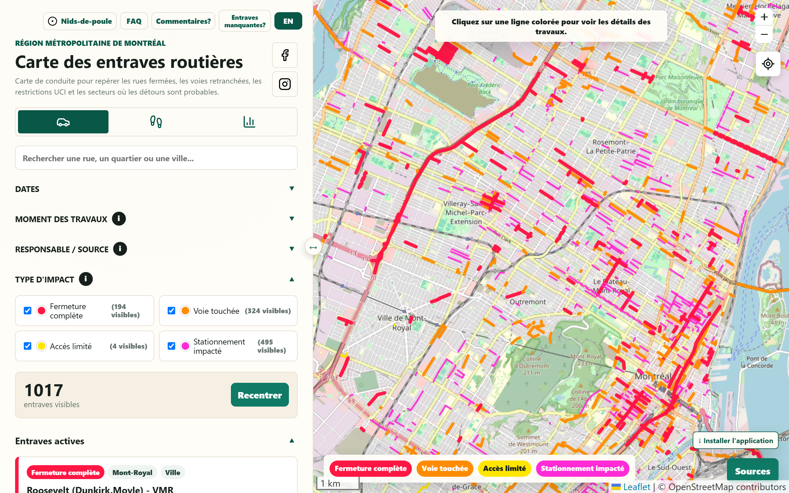
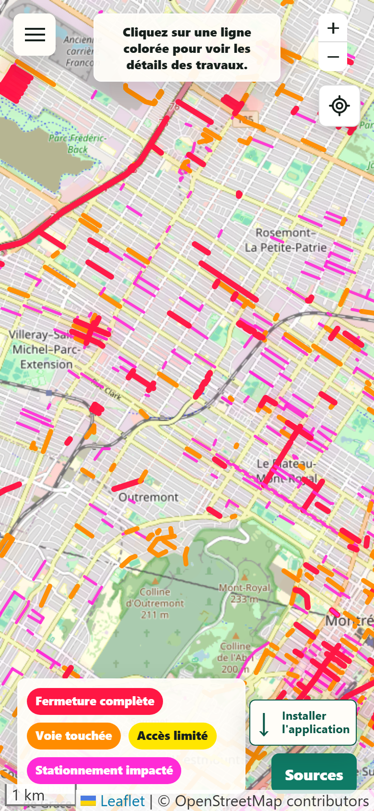
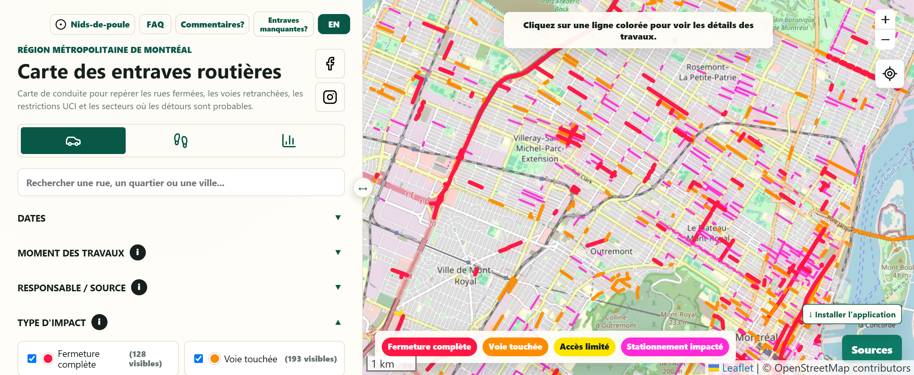
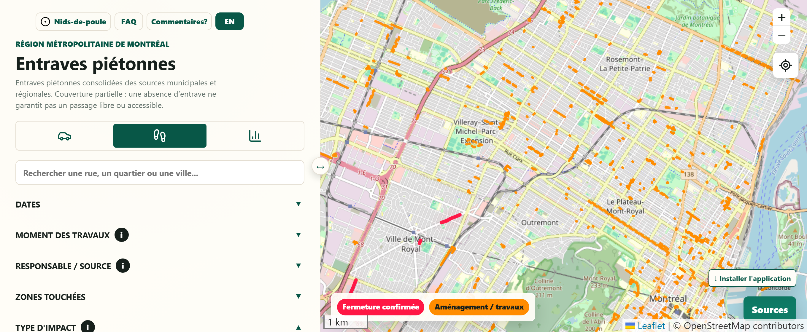
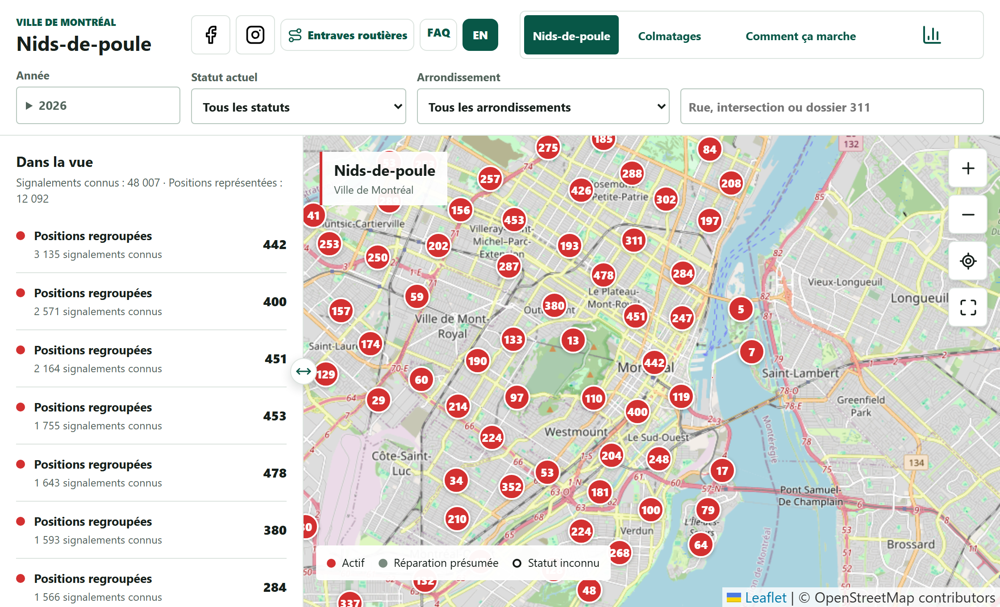
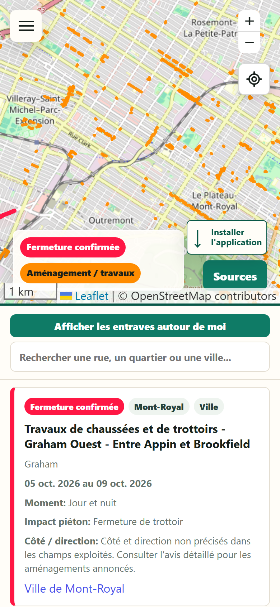

C'est déjàl'enfer.
Autant savoir où.


En auto ou à pied.
Deux cartes, des impacts différents.


© OpenStreetMap contributors
Et les nids-de-poule?
Les signalements 311 et les colmatages
publiés pour Montréal.

Retrouver une rue, un dossier
et l'historique d'un emplacement.
© OpenStreetMap contributors
Piétons : un mode
lecteur d'écran.
Pensé pour les personnes qui utilisent VoiceOver.
Une lecture plus directe.
- Recherche et localisation
accessibles hors du menu. - Fiches d'entraves
directement sous la carte. - Un choix mémorisé
pour la prochaine visite.
Un mode de la carte Piétons,
à utiliser avec le lecteur d'écran
de l'appareil.

Explore
ton secteur.
cestdejalenfer.ca
Découvre le site.
Abonne-toi pour suivre
le projet.
Quel secteur
veux-tu explorer?
Gratuit · FR / EN